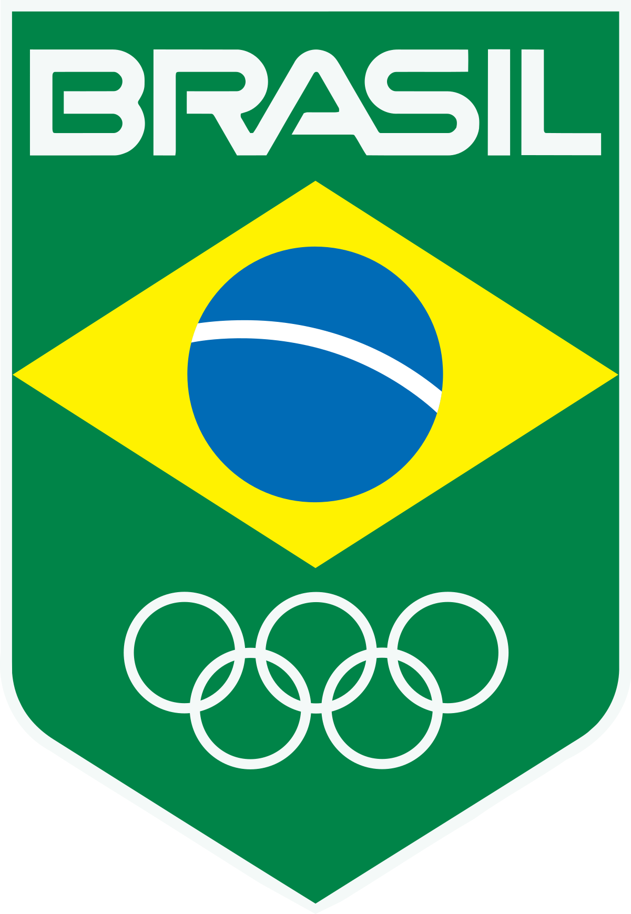
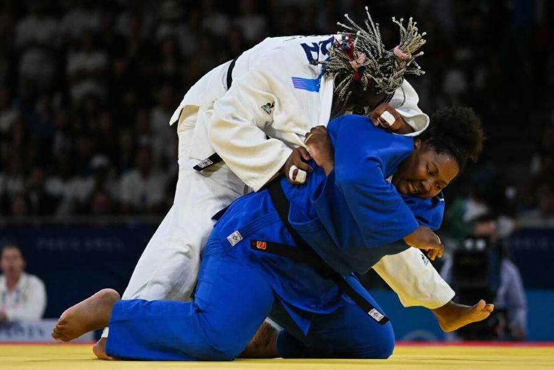
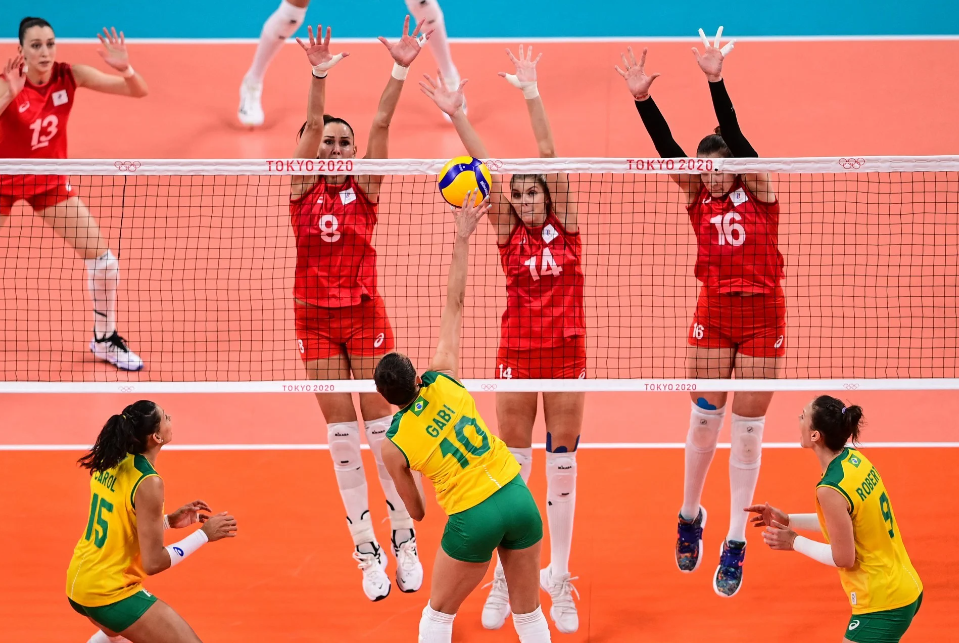
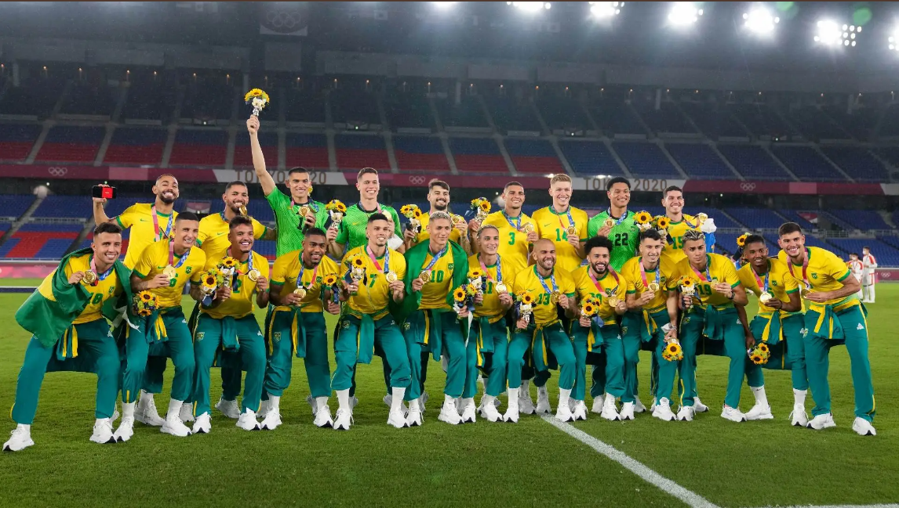
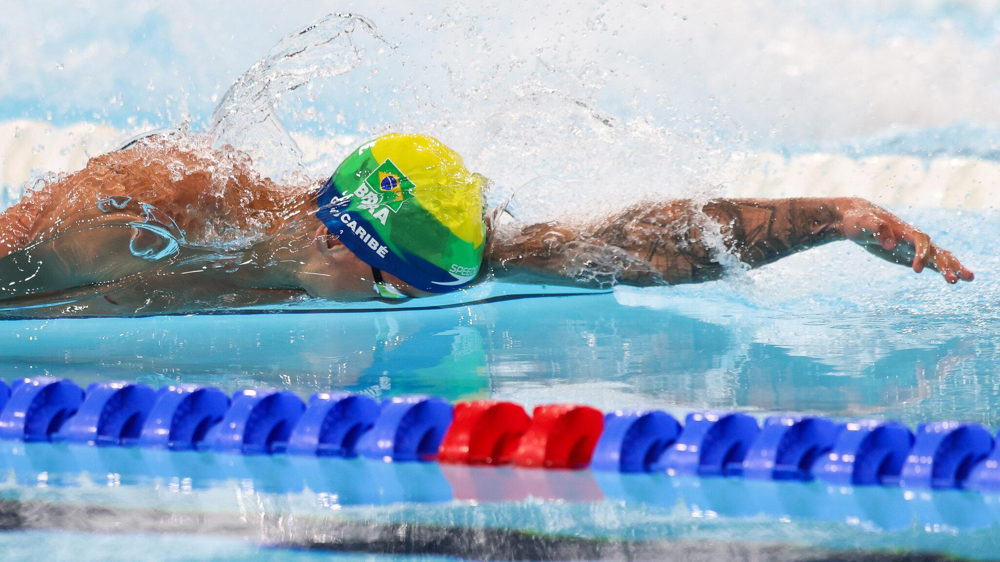
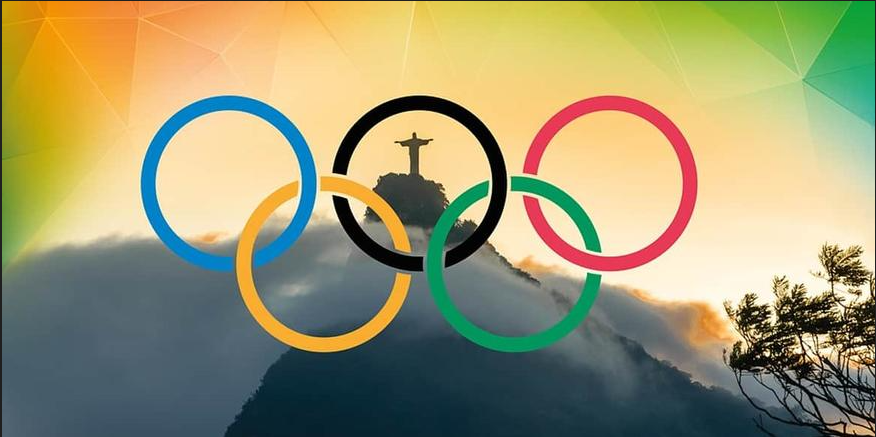

Jogos Olimpicos

Brasil nos Jogos Olimpicos
Judô

O Judô é um esporte de combate individual que no Brasil tem bom prestígio e popularidade, produzindo bons resultados em nível internacional, sendo um dos que mais trouxeram medalhas olímpicas ao país: com aproximadamente dois milhões de praticantes, foram 28 medalhas em Jogos Olímpicos de Verão no total, sendo cinco de ouro, quatro de prata e dezenove de bronze.
Disputado em Olimpíadas desde Tóquio 1964 (15 edições até Paris 2024) em que o esporte consta do programa oficial, o Brasil não subiu ao pódio em somente três ocasiões. As primeiras referências que encontramos quanto à introdução do judô no Brasil datam de muitos anos após a criação desta arteesporte no Japão, pelo mestre Jigoro Kano, quando, por volta de 1922, Mitsuyo (Eisei) Maeda, faz sua primeira luta em solo brasileiro em Porto Alegre, no Rio Grande do Sul. O esporte viria a ter um forte impulso com a chegada de 1 grupo de japoneses, em 1938, liderado por Ryuzo Ogawa, que fundou a Academia Hombu Budokan. Em 1969 é criada a Confederação Brasileira de Judô, reconhecida por decreto federal três anos depois, em 1972. O país foi sede do Campeonato Mundial de Judô em duas ocasiões, sendo uma edição masculina em 1965 e a atual forma unificada em 2007, tendo sido eleito para sediar também uma terceira edição, em 2013, todas elas na cidade do Rio de Janeiro, competição essa que o país coleciona 25 pódios no total em sua participação até a edição de 2011, em Paris, na França.
Do Brasil também vem o Jiu-Jítsu brasileiro (BJJ), arte marcial que originou no Judô mas com foco no ne waza e posteriormente se separaria do Judô e se tornaria também extremamente popular internacionalmente.
Em 2017, Massao Shinohara tornou-se o primeiro, e por enquanto único, brasileiro com a graduação máxima do judô, o 10º Dan, que recebeu da Confederação Brasileira de Judô em cerimônia realizada na própria Associação de Judô Vila Sônia
Atletismo

O atletismo é o conjunto de atividades esportivas composto por corridas, saltos e arremessos e o lema original dos Jogos Olímpicos “Citius, Altius, Fortius” (mais alto, mais rápido, mais forte) pode exemplificar bem esse tradicional esporte, o mais antigo do programa olímpico.
Na primeira edição dos Jogos da Antiguidade, em 776 a.C, na Grécia Antiga, o stadion corrida de aproximadamente 200m reuniu cerca de 40 mil pessoas que assistiram à vitória do primeiro campeão olímpico, Koroebus, em Olimpia. Os eventos esportivos daquela época celebravam a força física, a velocidade e a habilidade, componentes que se perpetuaram na evolução das provas do atletismo ao decorrer dos séculos.
O formato moderno do atletismo foi estabelecido na Inglaterra, no século XIX. Desde então, o esporte é disputado nas provas oficiais de: corridas (rasas, com barreiras e com obstáculos), marcha atlética, revezamentos, saltos, arremessos e lançamentos, prova combinada (decatlo e heptatlo).
No total, o atletismo possui mais de 40 modalidades, sendo 28 delas disputas olímpicas. As modalidades são disputadas em estádios fechados, com provas de pista (corridas) e campo (saltos, arremessos, lançamentos), e na rua (corridas e marcha atlética, geralmente). A prova mais tradicional do atletismo é a maratona, corrida na rua em que os competidores fazem um percurso de 42 km.
No Brasil, o atletismo começou nas últimas décadas do século XIX, mas se consolidou e ficou mais conhecido no século XX. Nos Jogos Olímpicos Paris 1924 o país participou pela primeira vez com uma equipe de atletismo.
Um nos nomes mais conhecidos do atletismo brasileiro é Adhemar Ferreira da Silva. Atleta do salto triplo, recordista mundial, ele conquistou a medalha de ouro nos Jogos Olímpicos Helsinque 1952 e nos Jogos Olímpicos Melbourne 1956, sendo o primeiro atleta brasileiro bicampeão olímpico da história.
Vanderlei Cordeiro de Lima é outro nome brasileiro que entrou para a história do atletismo mundial. Medalha de bronze na maratona dos Jogos Olímpicos Atenas 2004, ele é o único brasileiro a ser agraciado com a rara medalha Pierre de Coubertin, maior honraria do Comitê Olímpico Internacional (COI) oferecida a atletas e personalidades que simbolizam o espírito olímpico.
Vôlei

Potências do vôlei mundial, a seleção masculina de vôlei e a seleção feminina de vôlei estão convocadas e chegam para manter a tradição de medalhas do Brasil, que começou em 1984, nessa edição dos Jogos Olímpicos de Paris 2024, que começa no próximo dia 26 de julho
Sob pressão, as equipes de Bernardinho e José Roberto Guimarães encaram grupos difíceis, e vêm, ambas, de campanhas com vitórias importantes na Liga das Nações 2004 (VNL), porém, sem garantir um pódio. Em Paris, e expectativa é de retomada e que ambas as equipes engrossem a lista de respeito que começou a ser construída há mais de 30 anos.
Desde que o vôlei masculino entrou para o cronograma Olímpico, o Brasil participou de todas as edições dos Jogos. Na primeira aparição, em Tóquio 1964, a equipe ficou apenas na 7ª posição. A primeira medalha, de prata, veio só em Los Angeles 1984, numa derrota para os EUA por 3 sets a 0, mas que marcou toda uma geração e pavimentaria o caminho da vitória nas décadas seguintes.
Entre as mulheres, foi em Atlanta 1996 que o país entrou definitivamente para a história dos Jogos, ao conquistar o bronze diante da Rússia. A vitória dura na disputa pelo 3º lugar, por 3 sets a 2, naquela que seria a primeira medalha do vôlei feminino, manteria o Brasil não somente como presença garantida nas edições seguintes, mas também marcaria o início de uma trajetória vitoriosa
A primeira participação foi em Tóquio-1964, quando o vôlei entrou no programa Olímpico simultaneamente no masculino e no feminino, tendo a extinta União Soviética campeã entre os homens, e o Japão, entre as mulheres.
Futebol

A primeira participação do Brasil no torneio de futebol nas Olimpíadas aconteceu em 1952, em Helsinque. Naquela edição, a Seleção Brasileira parou nas quartas de final, eliminada pela Alemanha Ocidental.
Somente em 1984, o Brasil conquistou sua primeira medalha no futebol em Jogos Olímpicos. A seleção era formada, basicamente, por jogadores do Internacional e aproveitou seu entrosamento para chegar à final. Na disputa do título olímpico em Los Angeles, os brasileiros ficaram com a prata ao perderem para a França por 2 x 0.
Em 1988, o Brasil conquistou mais uma medalha de prata. Na edição de Seul, a equipe comandada por Carlos Alberto Silva contou com diversos jovens promissores, como Romário, Taffarel, André Cruz, Jorginho, Neto, Bebeto, Valdo, Ricardo Gomes e Mazinho
A Seleção Brasileira perdeu a final para a União Soviética na prorrogação. Romário abriu o placar, mas os soviéticos empataram com um gol de pênalti no segundo tempo e conquistaram o ouro no tempo extra.
Depois de ficar fora do torneio de 1992, em Barcelona, a Seleção Brasileira voltou às Olimpíadas em 1996. Na edição de Atlanta, o time que contava com Rivaldo, Bebeto e Ronaldo no ataque acabou com a medalha de bronze.
O Brasil vencia a Nigéria por 3 x 1 na semifinal e sofreu a virada, ficando fora da final. Na disputa de terceiro lugar, o time comandado por Zagallo goleou Portugal por 5 x 0.
Outro time africano eliminou a Seleção Brasileira em 2000. A equipe do técnico Vanderlei Luxemburgo, mesmo com dois jogadores a mais, perdeu para Camarões na prorrogação das quartas de final.
Depois de não se classificar para os Jogos Olímpicos de 2004, o Brasil esteve no pódio nas três edições seguintes.
Em 2008, a Seleção Brasileira, liderada por Ronaldinho Gaúcho, caiu para a Argentina, de Riquelme e Lionel Messi, nas semifinais. O bronze foi conquistado com vitória sobre a Bélgica, por 3 x 0.
Quatro anos depois, em Londres, o Brasil voltou à final do torneio de futebol das Olimpíadas. O time que contava com Neymar foi derrotado pelo México, por 2 x 1.
Natação

A natação nas Olimpíadas é um dos eventos mais emocionantes e tradicionais dos Jogos Olímpicos, atraindo, portanto, espectadores de todo o mundo.
As competições de natação são realizadas em piscina olímpica, de 50 metros de comprimento, na qual os atletas competem em diversas modalidades, como estilo livre, costas, peito e borboleta, além de provas de revezamento. Dessa maneira, garantem muita versatilidade e dinâmica a quem assiste.
A estreia do Brasil na natação em Jogos Olímpicos foi em 1920, na Antuérpia, quando o país partiu para o evento representado por Orlando Amêndola, João Jório Abrahão Saliture, Adhemar Ferreira Serpa e Angelo Gammaro. Entretanto, foi apenas em Helsinque-1952, que Tetsuo Okamoto inaugurou a história de medalhas conquistadas por brasileiros nos Jogos com o bronze nos 1.500m livre.
No total, a modalidade já rendeu 13 medalhas ao país, sendo uma de ouro — nos inesquecíveis 50m livre de Cesar Cielo, em Pequim-2008 —, 4 de prata e 8 de bronze. Apesar de o primeiro pódio ter sido em uma prova de fundo, a maior parte das conquistas ocorreu em provas de velocidade.
Todas as medalhas olímpicas brasileiras obtidas até hoje na natação foram conquistadas por atletas homens. Em Los Angeles-1932, Maria Lenk entrou para a história como a primeira mulher sul-americana a disputar os Jogos Olímpicos.
Introdução

Os Jogos Olímpicos são a maior competição esportiva do mundo. Disputados por países dos cinco continentes, os jogos são realizados a cada quatro anos e acontecem nas edições de verão e de inverno.
As Olimpíadas, como também são chamados os Jogos Olímpicos, surgiram na Antiguidade, por volta de 776 a. C., de acordo com registros históricos. Não há uma definição precisa sobre seu surgimento, mas o que se sabe é que esses jogos estavam relacionados a rituais religiosos como homenagem a Zeus, o rei dos deuses da mitologia grega.
Em 1896, na cidade grega de Atenas, foi realizada a primeira edição da versão moderna dos Jogos Olímpicos. A competição foi idealizada pelo esportista francês Barão Pierre de Coubertin.
O Brasil nos Jogos Olímpicos acumula 24 participações desde 1920 e já conquistou um total de 170 medalhas olímpicas, sendo 40 de ouro. O país sediou os Jogos Olímpicos de 2016, realizados no Rio de Janeiro. Nessa edição, o time brasileiro contou com a maior delegação da história na competição: 465 atletas.
Entre os maiores medalhistas olímpicos brasileiros, estão: Rebeca Andrade, com seis medalhas (ginástica artística) e Isaquias Queiroz, com cinco medalhas (canoagem). O judô é o esporte que rendeu mais pódios para os brasileiros. Ao todo, os atletas judocas do Brasil já conquistaram 28 medalhas olímpicas.